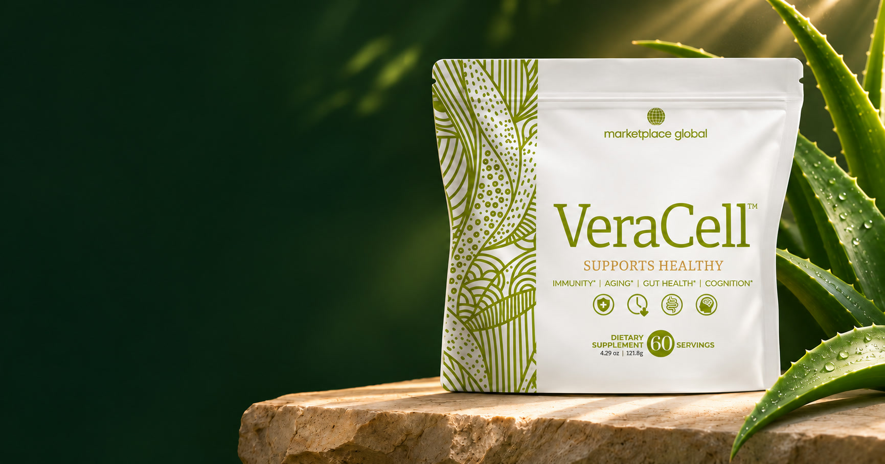
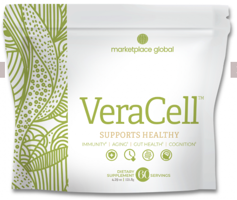

A daily ritual. A bigger purpose.
Nourish your foundation. Help nourish a child's future.

Meet VeraCell. Five thoughtfully selected ingredients in an unflavored daily powder for gut health and healthy immune support.*
Your daily routine. A bigger purpose.
What VeraCell is. Why the ingredients matter. How your purchase helps nourish children.
The people behind the story.
Explore the ingredients with Dr. Ben. Hear the research history and giving mission from Sam.
Nature is complex. Your formula should be clear.
Not a probiotic. A formula designed to support the ecosystem already inside you.* Five core ingredients. Every amount disclosed.
Amounts per scoop. Recommended use: two scoops daily.
Aloe is the starting point. Extraction matters.
Not simply more powder.
- 01 / IsolateFind the fraction.
- 02 / PreserveProtect the structure.
- 03 / CharacterizeKnow what's there.
Your immune system is a team. Not an on/off switch.
It has to recognize, communicate, and respond appropriately.
- 01The ecosystemBeneficial gut microbes use certain fibers as food.
- 02The interfaceThe gut's mucus layer helps separate its contents from the body.
- 03The conversationImmune cells communicate using chemical signals.
More than aloe. Meet acemannan.
Inside the aloe leaf is a fascinating family of long-chain sugars.
Immune cells. In conversation.
Laboratory studies found that acemannan changed these cells' activation and signaling.
Nourish the world within.
Research on aloe polysaccharides points to potential prebiotic activity, not a guaranteed digestive outcome.
The science of repair.
Researchers have investigated acemannan in wound healing and tissue repair.
More than turning it up.
Some findings show reduced inflammatory activity; others show immune activation. The preparation and context matter.
1 of 4
What did the studies actually find?
Larch arabinogalactan
A 2021 randomized crossover study in 30 healthy adults found that a larch arabinogalactan preparation changed aspects of the gut microbiome over six weeks.
Gum acacia
A human dose-ranging study found increased levels of selected beneficial bacteria after people consumed gum acacia.
Vegan NAG
NAG is used in glycoproteins and related structures, which is why it interests researchers studying the gut's protective surface.
Fucoidan
A 2025 randomized, double-blind study in 91 adults investigated how a fucoidan-rich seaweed extract affected the gut microbiome.
1 of 4
Ingredient research helps explain the formulation. These studies did not test finished VeraCell, and laboratory findings don't establish the same results in people.
We feed 45,000 kids daily.
Sam Caster describes the commitment simply: for every bag of VeraCell sold, a child receives 30 days of nourishment through the program.
Keep it simple. Make it consistent.

- 01Scoop.One scoop of unflavored VeraCell.
- 02Mix.Add to 8–12 ounces of water or your favorite beverage.
- 03Repeat.Twice daily. One 60-serving bag fits a 30-day routine.
No artificial flavors, colors, or sweeteners, according to MPG's product guide. Follow the current package directions.
Make your next daily habit matter.
Message the person who shared this page with you. They can answer your questions and send you their ordering link.
I went through the VeraCell story. Can you answer a few questions and send me your ordering link?
Copied. Paste it into a message.
Ordering, current pricing, and availability are handled by MarketPlace Global. The independent MarketPlace Global affiliate who shared this page may earn commissions from qualifying purchases. This is an independent educational page, not the corporate MPG website. *These statements have not been evaluated by the Food and Drug Administration. This product is not intended to diagnose, treat, cure, or prevent any disease.
The research-history sources
The film includes a reported investment of more than $100 million in acemannan research from a historical presentation account. Carrington's own 2006 announcement describes more than 130 patents issued worldwide across its core technology: processes, uses, and compositions.
 Carrington's 2006 patent announcement
A little scoop. A thoughtful formula.
Carrington's 2006 patent announcement
A little scoop. A thoughtful formula.Start with the foundation.
Your gut is home to a complex community of microorganisms. Prebiotic ingredients provide nourishment for beneficial bacteria. VeraCell brings together plant-derived polysaccharides and vegan NAG in one simple daily routine.
Not a probiotic. A formula designed to support the ecosystem already inside you.*
Acemannan · Aloe vera, inner leaf · 200 mg per scoop
A mannose-rich polysaccharide. The reason aloe's inner leaf has become such a compelling subject of scientific research. Studied for its structure, immune-cell interactions, and potential prebiotic activity. Its acetyl groups and chain structure are part of what makes the research interesting.
The five, per scoop
- Acemannan, aloe inner-leaf polysaccharide: 200 mg
- Larch arabinogalactan, a tree-derived prebiotic fiber: 750 mg
- Gum acacia, a plant-derived soluble fiber: 750 mg
- Vegan NAG, N-acetyl-D-glucosamine: 150 mg
- Fucoidan, a brown-seaweed polysaccharide: 100 mg
Amounts per scoop. Recommended use: two scoops daily. Other ingredient: rice fiber (ground rice hulls). NAG is an amino sugar; the other four core ingredients are polysaccharides. Acacia and larch arabinogalactan are prebiotic fibers. NAG is an amino sugar found in compounds such as mucin. Fucoidan is a sulfated polysaccharide from brown seaweed.
Read the manufacturer's product guide The part of aloe worth understandingAloe is the starting point. Extraction matters.
A leaf contains many compounds. Acemannan is one specific family of long-chain sugars within it. Separating and preserving those molecules is a very different job from simply making aloe juice.
01 / Isolate: find the fraction.
Acemannan exists in chains of different sizes. Extraction and filtration can change which fractions are present in the final ingredient.
02 / Preserve: protect the structure.
Processing can change the molecule. Researchers study chain size and acetylation because those features can influence biological activity.
03 / Characterize: know what's there.
Amount, molecular structure, and activity are different measurements. A meaningful comparison looks at the actual extract, not just the size of the scoop.
A question decades in the making.
Early Carrington Laboratories work, including Bill McAnalley's aloe-processing patents, helped characterize and isolate acemannan. In the VeraCell story, Sam Caster describes Dr. Santiago Rodriguez's later work on filtration and fraction selection. The enduring question: how do you preserve the parts that make this molecule interesting?
Explore the early processing patent 4× · The extraction comparisonMore of the fractions. Not simply more powder.
The VeraCell educational presentation describes “4× more bioactive acemannan fractions per gram than standard extracts.” That comparison concerns the ingredient's fractions per gram, not four times the health benefit.
Understand the comparison
The presentation attributes this comparison to Lorand Labs. The underlying assay, named comparator, and current product-linked report were not included in the material available for this page. In his VeraCell story, Sam Caster separately describes filtration and a historical 3.5-fold fraction comparison. Those descriptions are not a clinical trial showing four times better results from VeraCell.
Immune modulation, in plain EnglishYour immune system is a team. Not an on/off switch.
It has to recognize, communicate, and respond appropriately.
“Immune modulation” means influencing immune activity. It doesn't simply mean turning everything up. Researchers have observed acemannan preparations changing immune-cell signals in laboratory studies, with different responses depending on the preparation and experimental setting.
That is what makes the research interesting: understanding how a plant-derived molecule interacts with the body's defense network. It does not establish that an oral supplement can correct every immune problem.
The ecosystem
Beneficial gut microbes use certain fibers as food.
The interface
The gut's mucus layer helps separate its contents from the body.
The conversation
Immune cells communicate using chemical signals.
VeraCell's ingredients were selected around this gut-and-immune story. The research shows what has actually been studied.
See the research 02 / The scienceMore than aloe. Meet acemannan.
Inside the aloe leaf is a fascinating family of long-chain sugars.
Acemannan is a mannose-rich, acetylated polysaccharide. Its chain structure and acetyl groups help explain why researchers study how it interacts with cells and microorganisms. It's a specific component of aloe, not simply another name for aloe juice.
Laboratory cell researchImmune cells. In conversation.
Macrophages help detect and clear potential threats. Dendritic cells help coordinate immune responses. Laboratory studies found that acemannan changed these cells' activation and signaling.
Explore the immune-cell research Laboratory fermentation researchNourish the world within.
Gut microbes turn certain carbohydrates into compounds that nourish the colon's lining. Laboratory fermentation research on aloe polysaccharides points to potential prebiotic activity, not a guaranteed digestive outcome.
Explore the gut-microbe research Human study · Local dental applicationThe science of repair.
Researchers have investigated acemannan in wound healing and tissue repair. A human dental study tested an acemannan sponge directly inside treated teeth. This is a local application, not evidence that a swallowed supplement repairs organs.
Explore the human dental study Cell & animal researchMore than turning it up.
In cell and animal experiments, specific acemannan preparations have altered inflammatory signals. Some findings show reduced inflammatory activity; others show immune activation. The preparation and context matter.
Explore inflammatory-signaling research Human research · Gut microbiomeLarch arabinogalactan
The takeaway: A 2021 randomized crossover study in 30 healthy adults found that a larch arabinogalactan preparation changed aspects of the gut microbiome over six weeks.
The detail: Participants consumed 15 g per day of ResistAid or a maltodextrin control. Some bacterial proportions changed, but bowel habits and digestive symptoms did not significantly improve. Microbial diversity decreased in that study; “more diversity” is not a result we can claim from it.
VeraCell context: Two scoops contain 1.5 g of larch arabinogalactan per day. The study used ten times that amount and a particular ingredient preparation.
Chen et al. · Nutrition, 2021 Human research · Feeding beneficial bacteriaGum acacia
The takeaway: A human dose-ranging study found increased levels of selected beneficial bacteria after people consumed gum acacia.
The detail: Healthy volunteers consumed 5–40 g per day for up to four weeks. The researchers identified about 10 g per day as the most effective dose in that study. The ingredient was a specific gum arabic preparation; supplier-affiliated authors participated.
VeraCell context: Two scoops contain 1.5 g of gum acacia per day. This study helps explain the ingredient choice but does not establish the same outcome at VeraCell's dose.
Calame et al. · British Journal of Nutrition, 2008 Biological building block · Early human researchVegan NAG
The takeaway: NAG is used in glycoproteins and related structures, which is why it interests researchers studying the gut's protective surface.
The detail: A small 2000 pilot gave oral NAG at 3–6 g per day as additional therapy to 12 children with treatment-resistant inflammatory bowel disease. Eight improved; four required surgery. It was not a placebo-controlled trial, and the authors called for controlled studies.
VeraCell context: Two scoops provide 0.3 g per day. The pilot used 10–20 times that amount in a specific medical population. It does not establish VeraCell as a treatment for gut disease.
Salvatore et al. · Alimentary Pharmacology & Therapeutics, 2000 Human research · A marine polysaccharideFucoidan
The takeaway: A 2025 randomized, double-blind study in 91 adults investigated how a particular fucoidan-rich seaweed extract affected the gut microbiome.
The detail: The study compared 125 mg or 500 mg twice daily with placebo for 90 days. The higher dose showed changes in microbial diversity and selected bacterial groups; lower-dose effects were more modest. Some functional results were predictions from microbial data rather than direct measurements. The ingredient supplier funded the trial, and three authors were employees.
VeraCell context: Two scoops contain 200 mg of fucoidan per day. The trial tested a different, proprietary fucoidan-rich extract at 250 or 1,000 mg per day, not finished VeraCell.
Garcia et al. · Microorganisms, 2025 The ingredients, through the researchGo deeper into the research
Acemannan research spans chemistry, cell studies, animal models, and some human applications. For example, a randomized dental study used acemannan locally in a tooth, not as a swallowed powder. An older oral trial in people with advanced HIV did not show significant benefit on its principal immune or virologic measures. The preparation, dose, and route matter when interpreting a result.
03 / The purposeBehind every serving, there's a child.
Your wellness can be part of something bigger than you. Through the RCT Foundation, a portion of VeraCell proceeds supports MannaRelief's work bringing nutritional support to vulnerable children and families around the world.
Sam Caster describes the commitment simply: for every bag of VeraCell sold, a child receives 30 days of nourishment through the program.
The mission isn't simply to count bags. It's to help make consistent nourishment possible.
MannaRelief's Mighty Milk provides nutritional support enriched with acemannan to children in need. VeraCell and Mighty Milk are different products, connected by a shared purpose: helping people thrive.
The people and relationships behind the mission matter as much as the numbers.
MannaRelief's lifetime reach, as described by Sam Caster in the VeraCell story: founded 1999 by Sam & Linda Caster; 300M+ lifetime servings reported by MannaRelief's founder; 90 countries reached. Photo: a historical visit with children in Mexico.
A few good questionsBefore you begin.
Is VeraCell a probiotic?
No. It does not add live probiotic bacteria. It contains prebiotic ingredients selected to support beneficial bacteria, alongside other ingredients in the formula.
What should I expect to feel?
VeraCell is designed for daily gut and healthy immune support, not a stimulant effect or an immediate sensation. A noticeable change in digestion or regularity is not guaranteed. If you choose to try it, follow the label, track your own experience, and decide whether it fits your needs.
Why use it consistently?
Prebiotic ingredients provide nourishment for gut microbes as part of your ongoing diet. The goal is a manageable nutrition habit, not a one-time reset. There is no established requirement that everyone take VeraCell indefinitely; evaluate your routine and needs over time.
What does it taste like?
MPG describes it as completely unflavored. Mix it into water or a favorite beverage, or add it to foods such as yogurt.
Can children take VeraCell?
The company's suggested serving is formulated for adults. Ask a pediatrician before giving it to a child. The children's giving program uses Mighty Milk, not an automatic adult VeraCell dose.
What if I take medication?
Check with your healthcare professional before starting a supplement, especially if you take medication, are pregnant, or are nursing.